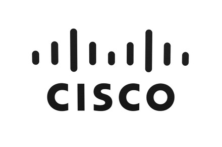

Maintenance prédictive
Analyse des données capteurs en temps réel pour anticiper les pannes et planifier la maintenance avant qu’un problème ne survienne.
Étudiant passionné par l’administration des systèmes et réseaux, en quête de solutions IT performantes, sécurisées et innovantes.
Actuellement en BTS Services Informatiques aux Organisations, option Solutions d’Infrastructure, Systèmes et Réseaux (SISR), je me forme aux métiers de l’administration systèmes et réseaux avec une approche rigoureuse et professionnelle.
Ma vision du métier d’administrateur systèmes et réseaux repose sur trois piliers fondamentaux : la sécurité des infrastructures, la performance des systèmes et la disponibilité des services. Dans un contexte où la transformation numérique s’accélère, maîtriser ces enjeux est essentiel.
Je m’intéresse particulièrement à la virtualisation, à la cybersécurité et aux architectures cloud, domaines en pleine expansion qui représentent l’avenir de l’IT.
Configuration et maintenance de systèmes serveurs et postes clients
Protection des données et sécurisation des infrastructures réseau
Déploiement et administration d’architectures réseau complexes
Le BTS SIO propose deux spécialisations distinctes. Mon choix de l’option SISR s’inscrit dans une logique de carrière orientée vers l’administration d’infrastructures et la sécurisation des systèmes d’information.
Le choix de l’option SISR correspond à mon projet professionnel d’évolution vers un poste d’administrateur systèmes et réseaux. L’infrastructure IT est le socle de toute organisation numérique, et maîtriser ces fondamentaux me permet de répondre aux enjeux de performance, de sécurité et de disponibilité que rencontrent les entreprises aujourd’hui.
Technicien systèmes & réseaux
Janvier — Février 2026Second stage au sein de la même association, avec une montée en responsabilité significative. Prise en charge autonome de l’infrastructure systèmes et réseaux de la structure.
Infrastructure sécurisée et documentée : gestion centralisée des utilisateurs via AD, segmentation réseau par VLAN, et mise en place d’une base documentaire réutilisable par l’équipe.
Technicien support & maintenance informatique
Mai — Juin 2025Premier stage au sein d’une association spécialisée dans le reconditionnement informatique et l’inclusion numérique. Prise en main de l’environnement professionnel à travers des missions concrètes de support et de maintenance.
Remise en service d’un grand nombre de postes pour les bénéficiaires de l’association, avec une maîtrise progressive des outils de clonage et de déploiement multi-OS.
Laboratoire pharmaceutique — Gestion de la flotte visite
Galaxy Swiss Bourdin (GSB) est un laboratoire pharmaceutique issu de la fusion entre le géant américain Galaxy (spécialisé dans les maladies virales) et le conglomérat européen Swiss Bourdin. L’entreprise compte environ 480 visiteurs médicaux en France métropolitaine et 60 en outre-mer. Le site parisien accueille les fonctions administratives (RH, comptabilité, direction, commercial) et les services techniques et scientifiques (labo-recherche, communication, juridique).
L’infrastructure réseau repose sur une segmentation en 12 VLANs, un environnement virtualisé avec 2 hyperviseurs XCP-ng hébergeant 5 machines virtuelles (1 Windows 11, 2 Windows Server 2022, 2 appliances Xen Orchestra). La salle serveur sécurisée au 6ème étage dispose d’un contrôle d’accès strict.

Cisco IOSConfiguration de 12 VLANs pour isoler les services (RH, Commercial, Labo-Recherche, Visiteurs, Serveurs, etc.)
Mise en place du routage inter-VLAN avec ACL de filtrage pour sécuriser les communications
Déploiement de 2 hyperviseurs XCP-ng avec 5 VM (Windows Server 2022, Windows 11, Xen Orchestra)
Configuration DNS, DHCP avec relais, Active Directory et NAT dynamique pour accès Internet
Quelques visuels issus de mes environnements de travail et de mes projets.
L’intelligence artificielle révolutionne le secteur aéronautique en transformant profondément la manière dont les avions sont conçus, fabriqués, entretenus et pilotés. Des acteurs majeurs comme Airbus et Boeing investissent massivement dans ces technologies pour optimiser la sécurité, réduire les coûts et améliorer les performances opérationnelles.
Le Big Data désigne l’ensemble des données massives générées en continu, caractérisées par leur volume, leur vélocité et leur variété. Dans l’aéronautique, chaque vol génère des téraoctets de données provenant de milliers de capteurs. L’IA exploite ces données pour la maintenance prédictive, l’optimisation des trajectoires et l’amélioration de la sécurité des vols.
Risques de fuites et de cyberattaques sur des données critiques liées à la sécurité aérienne.
Les modèles d’IA peuvent reproduire ou amplifier des biais présents dans les données d’entraînement.
Risque de sur-dépendance aux systèmes automatisés au détriment du facteur humain.
Vulnérabilités des systèmes connectés pouvant compromettre la sûreté des vols.
Analyse des données capteurs en temps réel pour anticiper les pannes et planifier la maintenance avant qu’un problème ne survienne.
Développement de systèmes d’assistance au pilotage et de drones autonomes capables de voler sans intervention humaine.
Détection d’anomalies en vol grâce à l’apprentissage automatique et amélioration des protocoles de sécurité.
Calcul en temps réel des routes de vol optimales pour réduire la consommation de carburant et les émissions CO2.
Inspection visuelle par IA des pièces aéronautiques pour détecter les défauts microscopiques en production.
Optimisation intelligente du trafic aérien pour réduire les retards et améliorer l’efficacité des aéroports.
Simulateurs de vol avancés utilisant l’IA pour créer des scénarios réalistes et adapter la formation des pilotes.
Traitement automatisé des données de vol pour améliorer la compréhension des incidents et renforcer les protocoles.
Utilisation de drones pilotés par IA pour l’inspection des avions, la logistique et les opérations de surveillance.
Création de répliques virtuelles d’avions pour simuler l’usure, tester des modifications et optimiser la conception.
Veille automatisée sur l’IA dans l’aéronautique
N’hésitez pas à me contacter pour toute question, proposition de stage ou opportunité professionnelle. Je vous répondrai dans les meilleurs délais.